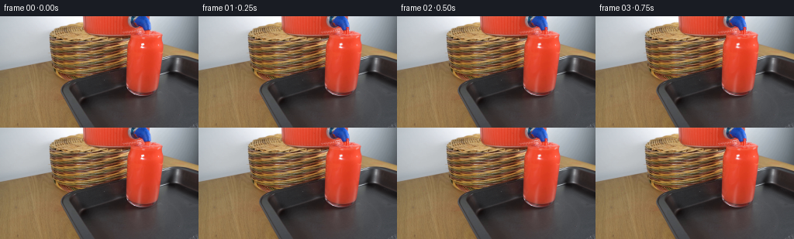
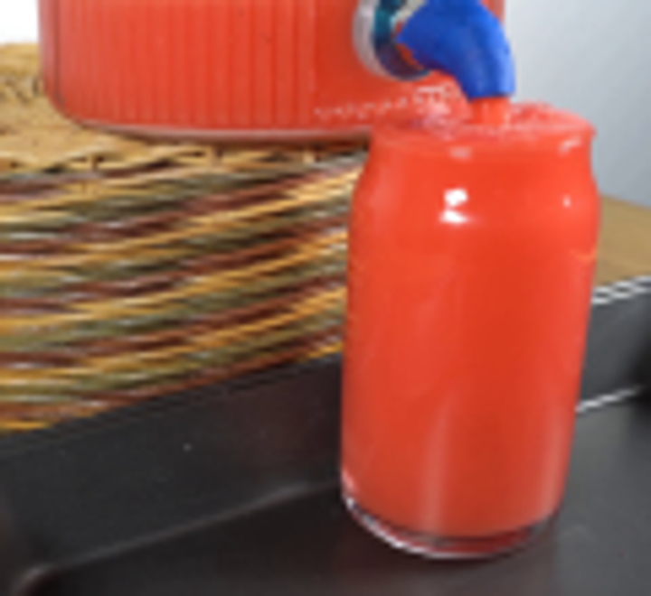
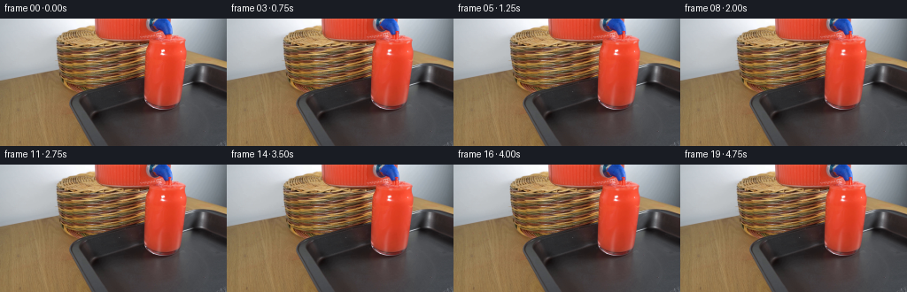
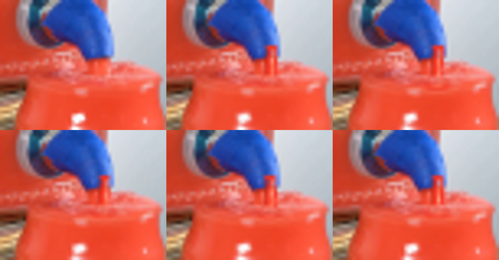

CODING AGENTS AS PIXEL WORLD MODELS
traex/GPT-5.6-Sol · 0088
点击播放 · 原生 RGB 像素
逐轮保存的候选
回放视频、检查图与代码变化。
每份候选均可单独播放。实际图片检查记录在下方工具轨迹中。
候选 01播放与检查图
点击播放 · 原生 RGB 像素


展开代码变化
--- 上一保存版本
+++ 本次保存版本
@@ -0,0 +1,139 @@
+from pathlib import Path
+import math
+import numpy as np
+import cv2
+from PIL import Image, ImageDraw, ImageFilter
+import artifact_io
+
+CASE_DIR = Path(__file__).resolve().parent
+W, H = 256, 144
+N = 20
+S = 4 # antialiasing scale for small liquid details
+
+
+def alpha_composite_np(frame, rgba):
+ """Composite a PIL RGBA image over an RGB numpy frame."""
+ ov = np.asarray(rgba, dtype=np.uint8)
+ a = ov[..., 3:4].astype(np.float32) / 255.0
+ return np.clip(frame.astype(np.float32) * (1-a) + ov[..., :3].astype(np.float32) * a, 0, 255).astype(np.uint8)
+
+
+def soft_liquid_motion(frame, phase):
+ """Extremely subtle refractive motion, limited to the red fluid inside the glass."""
+ yy, xx = np.mgrid[0:H, 0:W].astype(np.float32)
+ # Downward-travelling, low-amplitude refraction generated by the entering jet.
+ dx = 0.34*np.sin(0.24*yy - phase*1.55) * np.exp(-((xx-188)/22.0)**2)
+ dy = 0.18*np.sin(0.17*yy - phase*1.95 + 0.12*xx)
+ mapx, mapy = xx + dx, yy + dy
+ warped = cv2.remap(frame, mapx, mapy, cv2.INTER_LINEAR, borderMode=cv2.BORDER_REFLECT)
+
+ # Interior only. Stay away from the glass silhouette, rim, base, and specular edge.
+ mask = np.zeros((H,W), np.float32)
+ cv2.ellipse(mask, (186,61), (20,36), 0, 0, 360, 1.0, -1)
+ mask[:31] = 0
+ mask[94:] = 0
+ # Preserve the strong fixed highlights: they belong to the stationary glass.
+ cv2.ellipse(mask, (177,51), (4,18), -8, 0, 360, 0.16, -1)
+ mask = cv2.GaussianBlur(mask, (0,0), 2.2)[...,None]
+ return np.clip(frame*(1-mask) + warped*mask, 0,255).astype(np.uint8)
+
+
+def add_pour(frame, t):
+ phase = 2*math.pi*t/N
+ # Supersampled transparent layer. Coordinates below are in source pixels.
+ lay = Image.new('RGBA', (W*S,H*S), (0,0,0,0))
+ d = ImageDraw.Draw(lay)
+ sc = lambda p: tuple(int(round(v*S)) for v in p)
+
+ # The nozzle outlet is at about (192,15), directly above the already-nearly-full glass.
+ # A continuously varying jet edge and moving highlights make direction of flow readable.
+ pts_l, pts_r = [], []
+ for k in range(14,28):
+ q = (k-14)/14.0
+ cx = 191.9 + 0.34*math.sin(phase*1.15 + q*3.2) - 0.35*q
+ width = 1.55 + 0.46*q + 0.13*math.sin(phase*1.7-q*4.5)
+ pts_l.append((cx-width, k))
+ pts_r.append((cx+width, k))
+ jet = [sc(p) for p in pts_l + pts_r[::-1]]
+ d.polygon(jet, fill=(247,50,31,235))
+ # shaded edge and glossy center on the moving fluid column
+ d.line([sc(p) for p in [(190.45,15),(190.35,19),(190.1,23),(190.0,27)]],
+ fill=(179,35,27,125), width=1*S)
+ corex = 192.35 + 0.14*math.sin(phase*1.15)
+ d.line([sc((corex,15.3)),sc((corex-.35,26.7))], fill=(255,125,97,185), width=1*S)
+
+ # Short bright streaks advect downward through the jet.
+ for offset, alpha in [(0.0,210),(5.1,145)]:
+ y = 15.2 + ((t*2.45 + offset) % 10.3)
+ x = 192.25 - .022*(y-15) + .12*math.sin(phase+y)
+ d.line([sc((x,y)),sc((x-.08,min(y+1.7,27)))], fill=(255,206,181,alpha), width=max(1,S//2))
+
+ # Turbulent crown where the jet meets the surface; all marks remain inside the rim.
+ impact_x = 191.5 + .25*math.sin(phase*1.3)
+ bob = .20*math.sin(phase*1.8)
+ d.ellipse(sc((impact_x-3.9,23.0+bob, impact_x+4.0,28.0+bob)), fill=(245,55,35,120))
+ d.ellipse(sc((impact_x-2.3,23.1+bob, impact_x+2.4,26.2+bob)), fill=(255,113,81,145))
+
+ # Expanding elliptical ripples. Drawing only arcs preserves the photographed surface.
+ for j in range(3):
+ u = ((t*0.105 + j/3.0) % 1.0)
+ rx = 3.0 + 13.0*u
+ ry = 0.85 + 2.15*u
+ a = int(150*(1-u)**1.2)
+ box = sc((impact_x-rx, 26.4-ry+bob, impact_x+rx, 26.4+ry+bob))
+ d.arc(box, 8, 172, fill=(255,154,125,a), width=max(2,S//2))
+ d.arc(box, 188, 350, fill=(169,35,30,int(a*.54)), width=max(2,S//2))
+
+ # Fleeting tiny splash beads, deterministic and modest.
+ splash = math.sin(phase*2.0)
+ if splash > -0.25:
+ r = .55
+ sx = impact_x + 3.3 + 0.8*math.sin(phase)
+ sy = 23.0 - 1.6*max(0,splash)
+ d.ellipse(sc((sx-r,sy-r,sx+r,sy+r)), fill=(255,106,76,170))
+ if math.cos(phase*1.55) > .35:
+ r=.42; sx=impact_x-4.0; sy=23.8-1.1*math.cos(phase*1.55)
+ d.ellipse(sc((sx-r,sy-r,sx+r,sy+r)), fill=(255,130,99,150))
+
+ lay = lay.resize((W,H), Image.Resampling.LANCZOS)
+
+ # Clip all surface turbulence below y=20 to the mouth of the glass, while preserving
+ # the upper jet. This also prevents any artificial paint from leaking into the basket.
+ ov = np.array(lay)
+ Y,X=np.mgrid[0:H,0:W]
+ mouth = (((X-186.4)/24.0)**2 + ((Y-26.0)/8.0)**2 <= 1.0)
+ keep = (Y < 21) | mouth
+ ov[...,3] = (ov[...,3].astype(np.float32)*keep).astype(np.uint8)
+ return alpha_composite_np(frame, Image.fromarray(ov,'RGBA'))
+
+
+def add_subtle_fluid_shimmer(frame, t):
+ """Low-contrast descending caustics in red fluid, not camera or object motion."""
+ arr=frame.astype(np.float32)
+ Y,X=np.mgrid[0:H,0:W]
+ # Safe central fluid area, avoiding edges and fixed white reflection.
+ inside = (((X-187)/20.0)**2 + ((Y-61)/37.0)**2 < 1.0) & (Y>32) & (Y<94)
+ shimmer = (0.5+0.5*np.sin(Y*.22 + X*.055 - t*.78))
+ plume = np.exp(-((X-191.0)/10.5)**2) * np.exp(-(Y-32)/72.0)
+ delta = (shimmer-.5)*1.7*plume
+ arr[...,0] += delta*inside
+ arr[...,1] += delta*.42*inside
+ return np.clip(arr,0,255).astype(np.uint8)
+
+
+def main():
+ base = np.asarray(Image.open(CASE_DIR/'first_frame.png').convert('RGB'), dtype=np.uint8)
+ assert base.shape == (H,W,3)
+ frames=[base.copy()]
+ for i in range(1,N):
+ f=soft_liquid_motion(base.copy(), 2*math.pi*i/N)
+ f=add_subtle_fluid_shimmer(f,i)
+ f=add_pour(f,i)
+ frames.append(f)
+ frames=np.stack(frames).astype(np.uint8)
+ # Contract-critical exact first frame.
+ frames[0]=base
+ artifact_io.save(frames, CASE_DIR)
+
+if __name__=='__main__':
+ main()
可观测工具轨迹
实际执行的命令与返回图片。
命令 1exit 0
/bin/bash -lc "cat prompt.txt && printf '\\n---RULES---\\n' && cat GENERATION_RULES.md && printf '\\n---FILES---\\n' && find . -maxdepth 2 -type f -printf '%p %s bytes\\n' | sort"
命令 2exit 0
/bin/bash -lc "python3 - <<'PY'
from PIL import Image
im=Image.open('first_frame.png')
im.crop((100,0,220,110)).resize((720,660)).save('.tmp/crop.png')
print(im.mode,im.size)
PY"命令 3exit 0
/bin/bash -lc "sed -n '1,240p' artifact_io.py"
命令 4exit 0
/bin/bash -lc "python3 - <<'PY'
try:
import cv2; print('cv2',cv2.__version__)
except Exception as e: print(e)
PY"命令 5exit 0
/bin/bash -lc "python3 - <<'PY'
from PIL import Image
import numpy as np
im=np.array(Image.open('first_frame.png'))
m=(im[:,:,2]>im[:,:,0]*1.15)&(im[:,:,2]>im[:,:,1]*1.1)&(im[:,:,2]>70)
y,x=np.where(m)
print(x.min(),x.max(),y.min(),y.max())
for yy in range(0,40,2):
xs=np.where(m[yy])[0]
if len(xs): print(yy,xs.min(),xs.max())
PY"命令 6exit 0
/bin/bash -lc "cat > generate.py <<'PY'
from pathlib import Path
import math
import numpy as np
import cv2
from PIL import Image, ImageDraw, ImageFilter
import artifact_io
CASE_DIR = Path(__file__).resolve().parent
W, H = 256, 144
N = 20
S = 4 # antialiasing scale for small liquid details
def alpha_composite_np(frame, rgba):
\"\"\"Composite a PIL RGBA image over an RGB numpy frame.\"\"\"
ov = np.asarray(rgba, dtype=np.uint8)
a = ov[..., 3:4].astype(np.float32) / 255.0
return np.clip(frame.astype(np.float32) * (1-a) + ov[..., :3].astype(np.float32) * a, 0, 255).astype(np.uint8)
def soft_liquid_motion(frame, phase):
\"\"\"Extremely subtle refractive motion, limited to the red fluid inside the glass.\"\"\"
yy, xx = np.mgrid[0:H, 0:W].astype(np.float32)
# Downward-travelling, low-amplitude refraction generated by the entering jet.
dx = 0.34*np.sin(0.24*yy - phase*1.55) * np.exp(-((xx-188)/22.0)**2)
dy = 0.18*np.sin(0.17*yy - phase*1.95 + 0.12*xx)
mapx, mapy = xx + dx, yy + dy
warped = cv2.remap(frame, mapx, mapy, cv2.INTER_LINEAR, borderMode=cv2.BORDER_REFLECT)
# Interior only. Stay away from the glass silhouette, rim, base, and specular edge.
mask = np.zeros((H,W), np.float32)
cv2.ellipse(mask, (186,61), (20,36), 0, 0, 360, 1.0, -1)
mask[:31] = 0
mask[94:] = 0
# Preserve the strong fixed highlights: they belong to the stationary glass.
cv2.ellipse(mask, (177,51), (4,18), -8, 0, 360, 0.16, -1)
mask = cv2.GaussianBlur(mask, (0,0), 2.2)[...,None]
return np.clip(frame*(1-mask) + warped*mask, 0,255).astype(np.uint8)
def add_pour(frame, t):
phase = 2*math.pi*t/N
# Supersampled transparent layer. Coordinates below are in source pixels.
lay = Image.new('RGBA', (W*S,H*S), (0,0,0,0))
d = ImageDraw.Draw(lay)
sc = lambda p: tuple(int(round(v*S)) for v in p)
# The nozzle outlet is at about (192,15), directly above the already-nearly-full glass.
# A continuously varying jet edge and moving highlights make direction of flow readable.
pts_l, pts_r = [], []
for k in range(14,28):
q = (k-14)/14.0
cx = 191.9 + 0.34*math.sin(phase*1.15 + q*3.2) - 0.35*q
width = 1.55 + 0.46*q + 0.13*math.sin(phase*1.7-q*4.5)
pts_l.append((cx-width, k))
pts_r.append((cx+width, k))
jet = [sc(p) for p in pts_l + pts_r[::-1]]
d.polygon(jet, fill=(247,50,31,235))
# shaded edge and glossy center on the moving fluid column
d.line([sc(p) for p in [(190.45,15),(190.35,19),(190.1,23),(190.0,27)]],
fill=(179,35,27,125), width=1*S)
corex = 192.35 + 0.14*math.sin(phase*1.15)
d.line([sc((corex,15.3)),sc((corex-.35,26.7))], fill=(255,125,97,185), width=1*S)
# Short bright streaks advect downward through the jet.
for offset, alpha in [(0.0,210),(5.1,145)]:
y = 15.2 + ((t*2.45 + offset) % 10.3)
x = 192.25 - .022*(y-15) + .12*math.sin(phase+y)
d.line([sc((x,y)),sc((x-.08,min(y+1.7,27)))], fill=(255,206,181,alpha), width=max(1,S//2))
# Turbulent crown where the jet meets the surface; all marks remain inside the rim.
impact_x = 191.5 + .25*math.sin(phase*1.3)
bob = .20*math.sin(phase*1.8)
d.ellipse(sc((impact_x-3.9,23.0+bob, impact_x+4.0,28.0+bob)), fill=(245,55,35,120))
d.ellipse(sc((impact_x-2.3,23.1+bob, impact_x+2.4,26.2+bob)), fill=(255,113,81,145))
# Expanding elliptical ripples. Drawing only arcs preserves the photographed surface.
for j in range(3):
u = ((t*0.105 + j/3.0) % 1.0)
rx = 3.0 + 13.0*u
ry = 0.85 + 2.15*u
a = int(150*(1-u)**1.2)
box = sc((impact_x-rx, 26.4-ry+bob, impact_x+rx, 26.4+ry+bob))
d.arc(box, 8, 172, fill=(255,154,125,a), width=max(2,S//2))
d.arc(box, 188, 350, fill=(169,35,30,int(a*.54)), width=max(2,S//2))
# Fleeting tiny splash beads, deterministic and modest.
splash = math.sin(phase*2.0)
if splash > -0.25:
r = .55
sx = impact_x + 3.3 + 0.8*math.sin(phase)
sy = 23.0 - 1.6*max(0,splash)
d.ellipse(sc((sx-r,sy-r,sx+r,sy+r)), fill=(255,106,76,170))
if math.cos(phase*1.55) > .35:
r=.42; sx=impact_x-4.0; sy=23.8-1.1*math.cos(phase*1.55)
d.ellipse(sc((sx-r,sy-r,sx+r,sy+r)), fill=(255,130,99,150))
lay = lay.resize((W,H), Image.Resampling.LANCZOS)
# Clip all surface turbulence below y=20 to the mouth of the glass, while preserving
# the upper jet. This also prevents any artificial paint from leaking into the basket.
ov = np.array(lay)
Y,X=np.mgrid[0:H,0:W]
mouth = (((X-186.4)/24.0)**2 + ((Y-26.0)/8.0)**2 <= 1.0)
keep = (Y < 21) | mouth
ov[...,3] = (ov[...,3].astype(np.float32)*keep).astype(np.uint8)
return alpha_composite_np(frame, Image.fromarray(ov,'RGBA'))
def add_subtle_fluid_shimmer(frame, t):
\"\"\"Low-contrast descending caustics in red fluid, not camera or object motion.\"\"\"
arr=frame.astype(np.float32)
Y,X=np.mgrid[0:H,0:W]
# Safe central fluid area, avoiding edges and fixed white reflection.
inside = (((X-187)/20.0)**2 + ((Y-61)/37.0)**2 < 1.0) & (Y>32) & (Y<94)
shimmer = (0.5+0.5*np.sin(Y*.22 + X*.055 - t*.78))
plume = np.exp(-((X-191.0)/10.5)**2) * np.exp(-(Y-32)/72.0)
delta = (shimmer-.5)*1.7*plume
arr[...,0] += delta*inside
arr[...,1] += delta*.42*inside
return np.clip(arr,0,255).astype(np.uint8)
def main():
base = np.asarray(Image.open(CASE_DIR/'first_frame.png').convert('RGB'), dtype=np.uint8)
assert base.shape == (H,W,3)
frames=[base.copy()]
for i in range(1,N):
f=soft_liquid_motion(base.copy(), 2*math.pi*i/N)
f=add_subtle_fluid_shimmer(f,i)
f=add_pour(f,i)
frames.append(f)
frames=np.stack(frames).astype(np.uint8)
# Contract-critical exact first frame.
frames[0]=base
artifact_io.save(frames, CASE_DIR)
if __name__=='__main__':
main()
PY
python3 generate.py
python3 - <<'PY'
from PIL import Image
import numpy as np
im=np.array(Image.open('first_frame.png')); f=np.array(Image.open('frames/00.png'))
print('first exact',np.array_equal(im,f),'max',np.abs(im.astype(int)-f.astype(int)).max())
for i in [1,5,10,15,19]:
a=np.array(Image.open(f'frames/{i:02}.png'))
print(i,np.count_nonzero(np.any(a"'!=im,2)),np.abs(a.astype(int)-im.astype(int)).mean(),np.abs(a.astype(int)-im.astype(int)).max())
PY'命令 7exit 0
/bin/bash -lc "python3 - <<'PY'
from PIL import Image
for n in [0,1,3,8,14,19]:
im=Image.open(f'frames/{n:02}.png')
im.crop((160,0,211,40)).resize((510,400)).save(f'.tmp/top{n}.png')
# horizontal strip
out=Image.new('RGB',(510*3,400*2))
for j,n in enumerate([0,1,3,8,14,19]): out.paste(Image.open(f'.tmp/top{n}.png'),((j%3)*510,(j//3)*400))
out.save('.tmp/tops.png')
PY"命令 8exit 0
/bin/bash -lc "python3 - <<'PY'
import numpy as np
from PIL import Image
p=np.load('pixels.npz')['pixels']
assert p.shape==(144,256,20)
for i in range(20):
f=np.array(Image.open(f'frames/{i:02d}.png'))
assert f.shape==(144,256,3) and f.dtype==np.uint8
print('validated:',p.shape,'20 RGB PNG frames; first frame exact:',np.array_equal(np.array(Image.open('first_frame.png')),np.array(Image.open('frames/00.png'))))
PY
ls -lh pixels.npz index.html inspection.png generate.py"视觉工具实际返回图片 1

视觉工具实际返回图片 2

视觉工具实际返回图片 3

视觉工具实际返回图片 4

视觉工具实际返回图片 5

保存候选 1 份；完成命令 8 次；可验证图片返回 5 张。原始 API 响应与完整日志保留在本地。